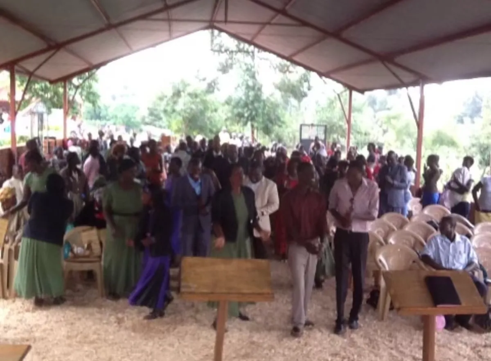
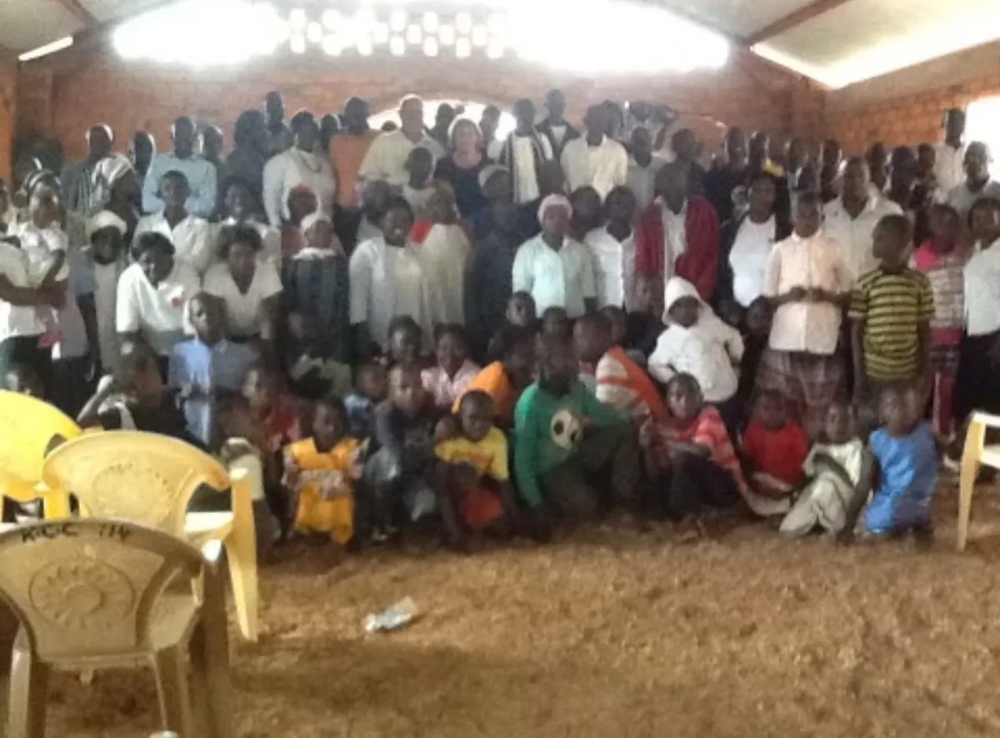
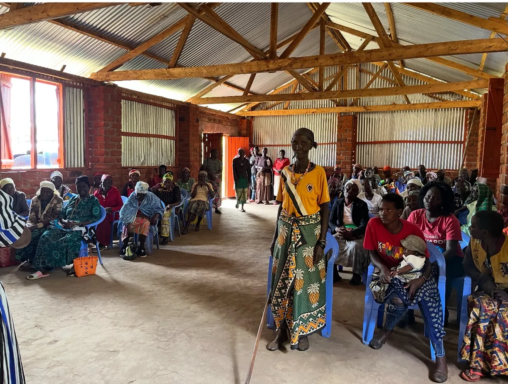
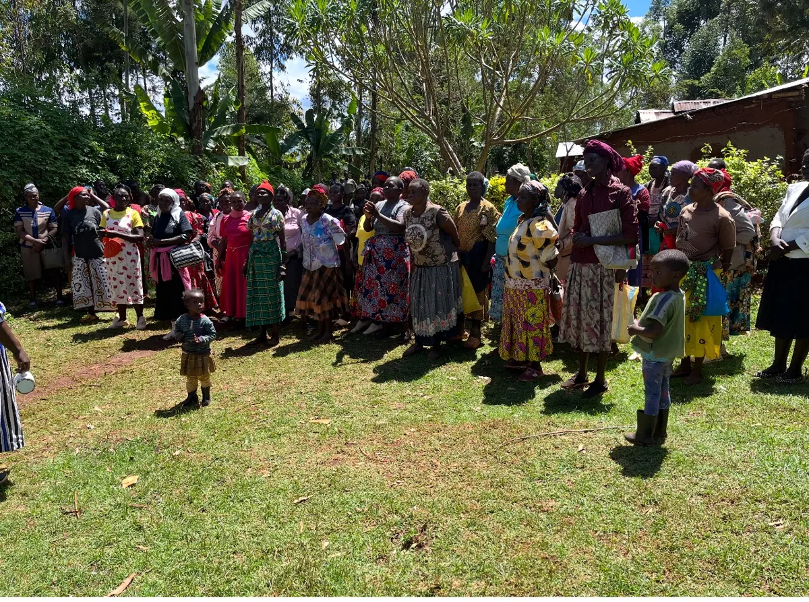
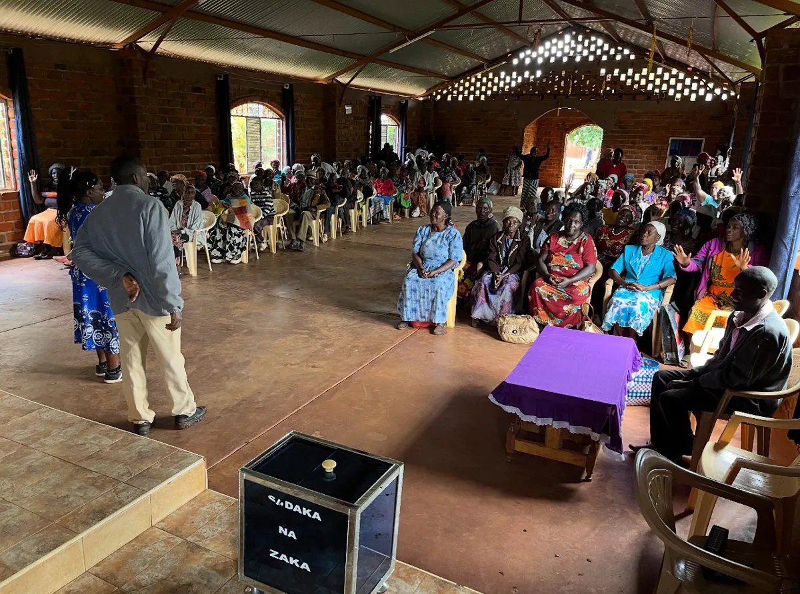
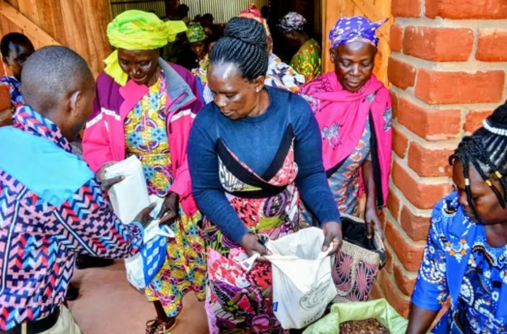
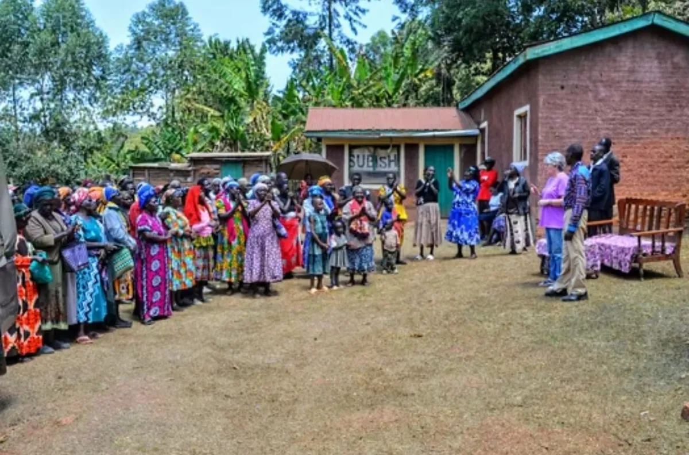
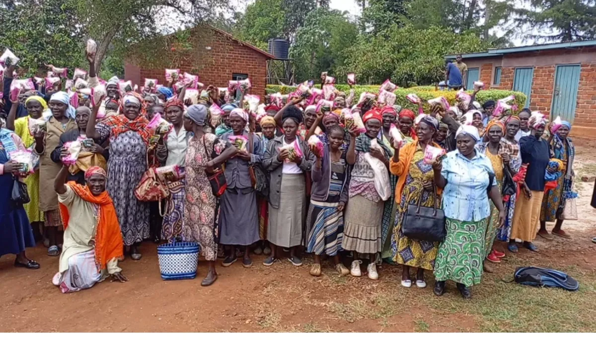

Lani Orosco, co‑founder28 March 2025
Lani Orosco, co‑founder28 March 2025March 28, 2025

When Coney and I arrived in Kitale, Kenya, in 2012, we fully intended to partner with a local orphanage that had earlier been established in a neighboring village.
There were approximately 15 boys there, only a few of them in school, and we offered financial help and provided food and support.
In a meeting with a local leader, we were introduced to a dozen widows who asked us to please start a church where they would be welcomed. They felt unwanted and unaccepted in any church close to them. They explained that five years earlier they had gathered at our same orphanage, under an huge avocado tree and prayed for just that.
After deciding that our compassion ministry should also include widows, we considered finding a way to bring this about.
The land that the boys home was on had enough property that we could put up a tent, large enough for a small congregation, yet not permanent. We could provide ministry for both the boys and the widows and anyone in the village.
One of our first services was for a wedding. The widows were all there, a part of the church.
As the church grew, Coney decided to build a permanent structure, and at its completion, the widows were there to celebrate!

We have 6 widows groups, Bwayi and Kaisagat


Kwiu, Karaus:

Wiyeta and Munyaka:


We now are able to visit 2 groups at a time, every other week. We pass out to each, a package of maize flour and two measures of beans similar to our pinto beans.
At Christmas we give them all a kilo of sugar which is highly desired. Between all the groups, we have approximately 600 widows.
Here they are with their bags of sugar.

So this is our second ministry here. One that developed out of a need but has been heartfelt and rewarding. I can’t explain how much these mamas mean to me.
I definitely get more out of this relationship than they do.
Mama Lani
First published on Mama Lani’s own blog.